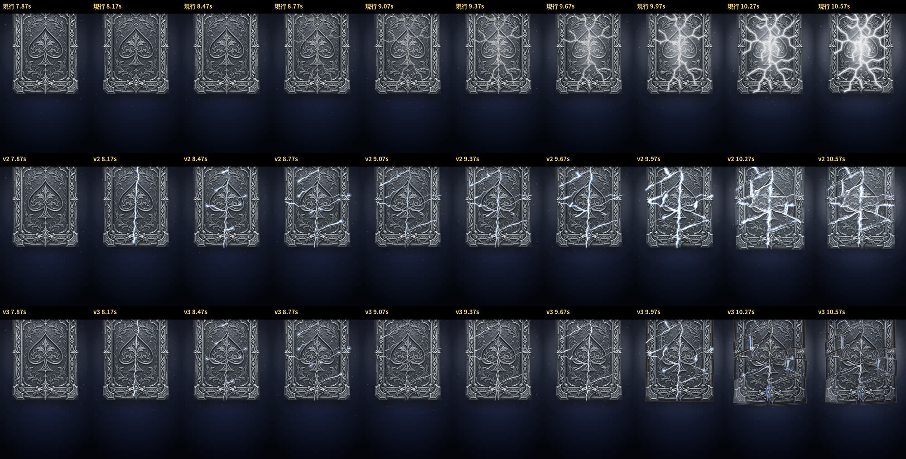
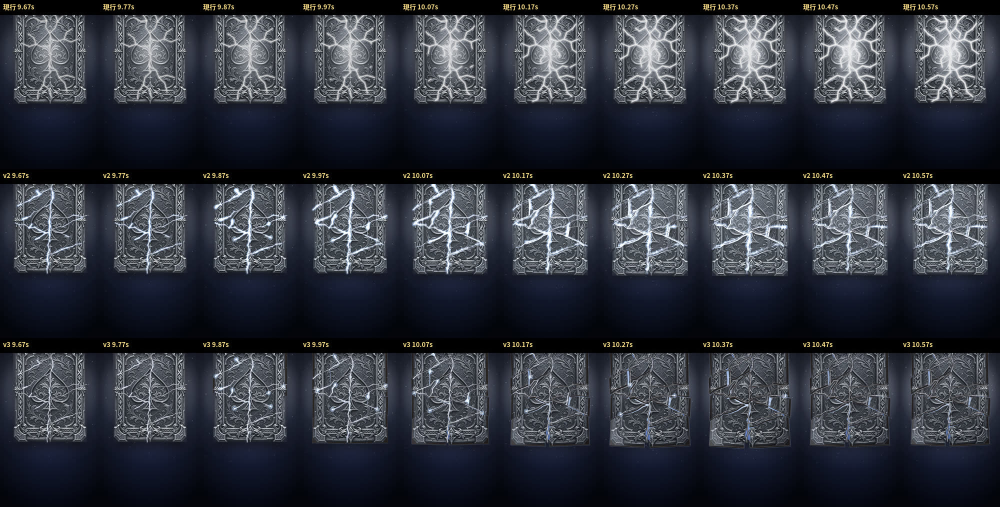
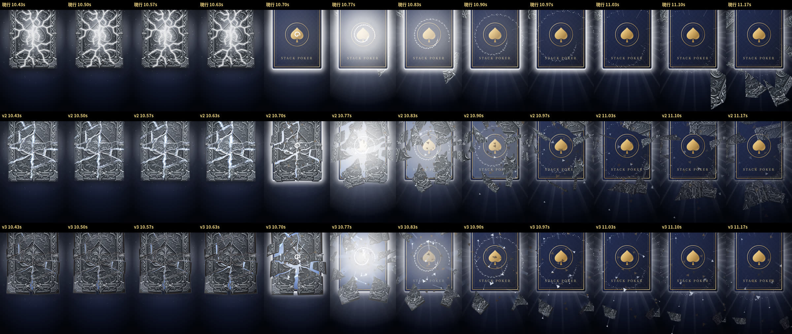

比較の動画・コマは、手動の時計で 30fps・1コマずつ描いた映像(390×844。同じ時刻で比べるため)。realtime-*.mp4 は自動録画(実時間。GPU なしの環境)。音は仮(3つとも同じ。合図の時刻は変えていない)
?crack を付けないときは n12 の石板ルートの記録と全474コマ一致。?crack=2 は前回の v2 のまま
すぐ再生(SR・銅→銀 昇格)
自分で操作(サウンドの切り替え → 演出の種類を選ぶ → 「演出を見る」。N・R〜UR・昇格・表向き・UR逆転を選べます)
https://imasanori0111-jpn.github.io/-stack-poker-test-web/gacha-review-stone3/stone-cur-v2-v3.mp4
https://imasanori0111-jpn.github.io/-stack-poker-test-web/gacha-review-stone3/crack-part.mp4
https://imasanori0111-jpn.github.io/-stack-poker-test-web/gacha-review-stone3/crack-slow.mp4



https://imasanori0111-jpn.github.io/-stack-poker-test-web/gacha-review-stone3/realtime-cur.mp4
https://imasanori0111-jpn.github.io/-stack-poker-test-web/gacha-review-stone3/realtime-v2.mp4
https://imasanori0111-jpn.github.io/-stack-poker-test-web/gacha-review-stone3/realtime-v3.mp4
https://imasanori0111-jpn.github.io/-stack-poker-test-web/gacha-review-stone3/realtime-v3-click.mp4
https://imasanori0111-jpn.github.io/-stack-poker-test-web/gacha-review-stone3/realtime-v3-faceup.mp4
https://imasanori0111-jpn.github.io/-stack-poker-test-web/gacha-review-stone3/realtime-v3-n.mp4